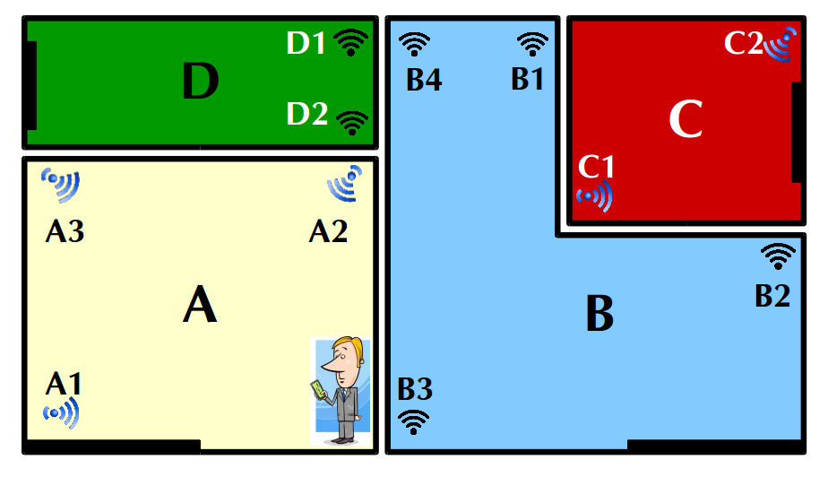

GeoAuth
Payment Authentication Service Powered by Sensewhere
Produced by Omar, Ivo, Sun
What is GeoAuth?
GeoAuth is an unique transaction fraud detection software powered by Sensewhere's Geolocation Services.
How does it work?
GeoAuth validates a transaction by matching its WiFi fingerprint against the WiFi profiles of a list of known vendors.
So
It's not just about calculating the coordinates!
WiFi Signatures
Phone
A smartphone picks up an unique set of signals from nearby WiFi Access Points.

Vendor
Likewise, each vendor has an unique list of WiFi Access Points.
Do their signatures match?
If the transaction is made at the vendor, the phone should have picked up some MAC addresses from the Vendor WiFi Access Points.Measuring similarity
How similar is the list of MAC addresses picked up by the transaction phone to the list of vendor MACs?

Jaccard Similarity
Given two sets A and B, the Jaccard Similarity is defined as
\[\begin{aligned} J(A, B) = \frac{|A \cap B |}{|A \cup B|} \end{aligned} \] In the previous case, A = Transaction, B = Vendor and the Jaccard Similarity = 7/15.This can be used as a measure of how likely the transaction has taken place in the vendor.
Building a vendor database
WAP Optimization
Improve the accuracy of WiFi Access Points (WAP) localization
Calculating WAP Positions
How SW Positioning works
WAP Positions Table -> Phone positions -> Update WAP Positions Table
Mass Spring algorithm
When a WAP has been picked up by a large number of phones, we can use an algorithm analogous to the mass-spring system in physics to calculate its position.

Dissimilarities
Dissimilarity in this context is a measure of how close two WAPs are to each other.


Dissimilarity from multiple scans

How might dissimilarities be useful?
Adds extra constraints to the mass-spring algorithm

Integrating into the SW positioning system
Offline

Experiment: Joy City, Xidan, China
- Data collected from 24th April 2017 for a 5 day period in a 1km area around Joy City
- 17024 unique WAPs were identified in the area
Results
Positioning error in metres for 130 test points
| Original SW | With Dissimilarity | |
|---|---|---|
| Min | 3.48 | 1.81 |
| Max | 56.9 | 61.1 |
| Median | 27.5 | 23.9 |
| Mean | 29.1 | 25.0 |
| Std. Dev. | 14.9 | 14.3 |
Integrating into the SW positioning system
Online

Experiment: Gyle Centre, Edinburgh
- Data collected from Gyle Centre, Edinburgh on 27th June 2017
- 432 unique MAC addresses identified.
Results

Experiment: Ocean Terminal, Edinburgh
- Data collected from Ocean Terminal, Edinburgh